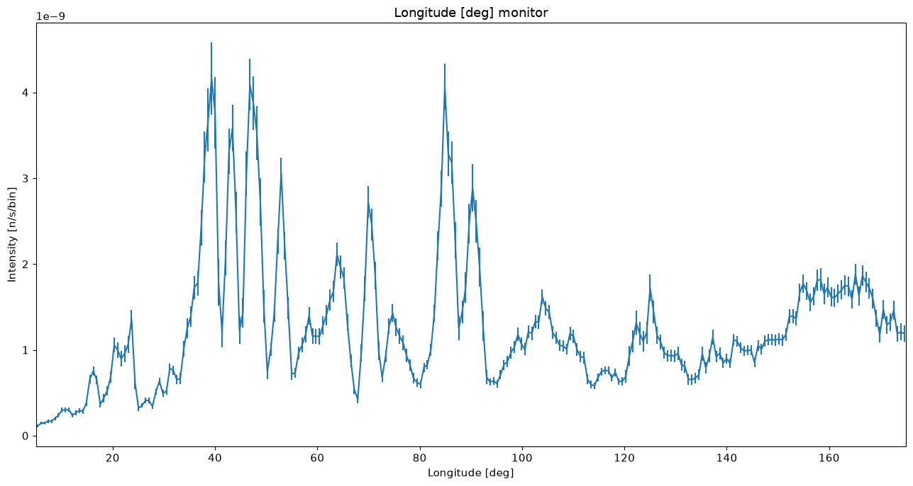
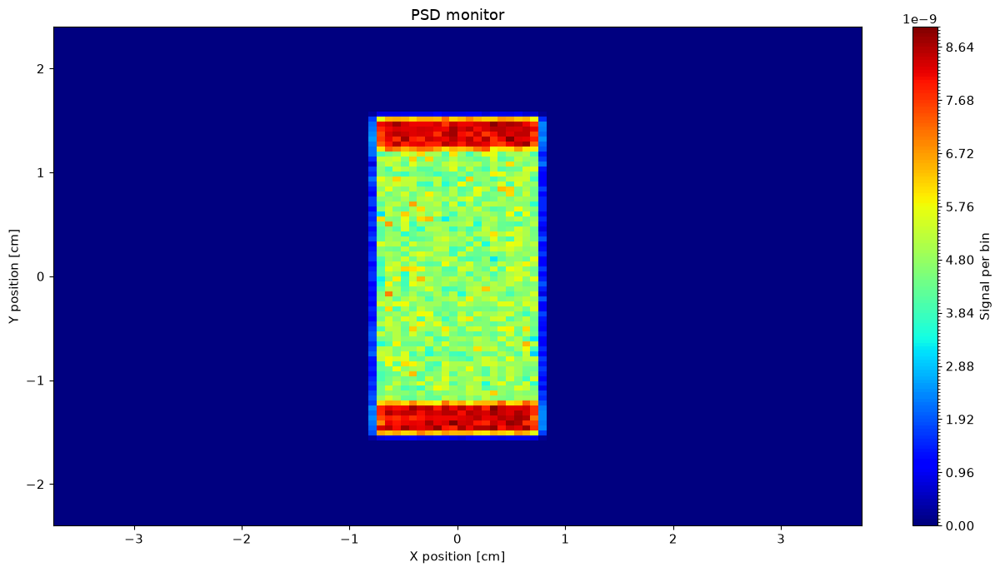
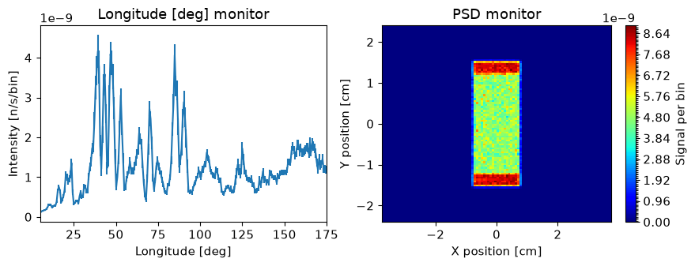
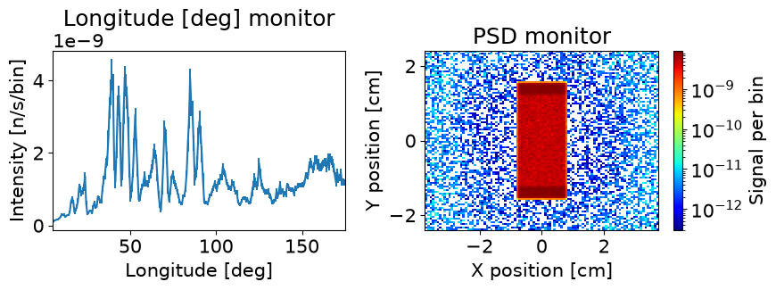

Plotting#
McStasScript includes a plotting module meant for plotting McStasScript data objects.
Example instrument#
First an example instrument is constructed to provide some data for plotting examples.
Performing the simulation#
Here the simulation is performed to provide the example data.
instrument.settings(ncount=1E6, output_path="plotting_example")
instrument.set_parameters(wavelength=1.5)
data = instrument.backengine()
print(data)
[
McStasData: banana type: 1D I:3.1658e-07 E:1.93571e-09 N:85974.0,
McStasData: PSD type: 2D I:7.22007e-06 E:1.85558e-08 N:284766.0]
make_plot and make_sub_plot#
The first available plotter is make_plot, it makes a single figure for each McStasData set given in the input.
ms.make_plot(data)


The second available plotter is make_sub_plot, it makes a single figure that includes plot of all given McStasData as subplots. This works best with between 1 and 9 monitors, as more tend to become difficult to read.
ms.make_sub_plot(data)

Customizing plots#
As described in the data section of the documentation, the McStasData objects contain preferences on how they should be plotted. The same keywords can however be given to the plotters to override these preferences. When plotting a list of McStasData objects, a list can be given for each keyword.
ms.make_sub_plot(data, log=[False, True], fontsize=15)

Available keywords#
The keywords available to customize plotting are the same as can be set for plot_options in McStasData. There are however a few additional keywords for controlling figure size and fontsize.
Keyword argument |
Type |
Default |
Description |
|---|---|---|---|
figsize |
tuple |
(13, 7) |
Tuple describing figure size |
fontsize |
int |
11 |
Fontsize to use in plotting |
log |
bool |
False |
Logarithmic axis for y in 1D or z in 2D |
orders_of_mag |
float |
300 |
Maximum orders of magnitude to plot in 2D |
colormap |
str |
“jet” |
Matplotlib colormap to use |
show_colorbar |
bool |
True |
Show the colorbar |
x_axis_multiplier |
float |
1 |
Multiplier for x axis data |
y_axis_multiplier |
float |
1 |
Multiplier for y axis data |
cut_min |
float |
0 |
Unitless lower limit normalized to data range |
cut_max |
float |
1 |
Unitless upper limit normalized to data range |
left_lim |
float |
Lower limit to plot range of x axis |
|
right_lim |
float |
Upper limit to plot range of x axis |
|
bottom_lim |
float |
Lower limit to plot range of y axis |
|
top_lim |
float |
Upper limit to plot range of y axis |